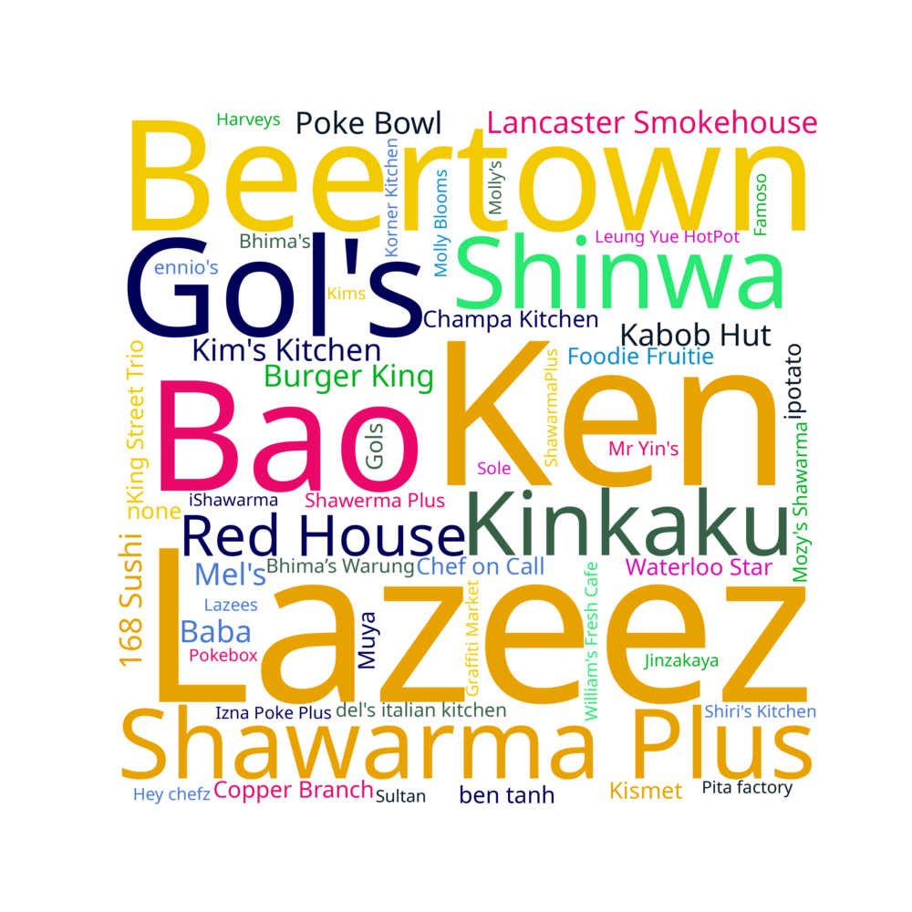

View this website on desktop for the best experience!
Class Friendliness
Most people perceived our class to be quite friendly, with an average friendliness rating of 3.86.
Class Friends
We defined a friend to be someone who you would invite to a birthday party. More people in our class had a smaller group of friends.
Out of your closest five friends, how many of them are in Tron 2022?
A sizable portion of the class had all of their closest friends in the class!
What is your favourite restaurant in Waterloo?

Lazeez remains the king
Eating Out by Year
Ignoring less eating out in third year due to the pandemic, people generally ate out more in fourth year. Probably a combination of more money and no meal plan
Exercise by Year
Students generally did more exercise in fourth year than first year 🏃♀
Waterloo Ranking by Year
People warmed up to Waterloo by fourth year
Sleep Length
Sleep length generally increased from first year to fourth year
Sleep Time
Overall, there was a normal-ish distribution of sleep time amongst students. Significantly more 4AM sleepers in fourth year than other years...
Imposter Feeling
40% of the respondents felt like they were an imposter in first year. This improved with time, but even in fourth year close to 15% of the respondents felt like imposters.
Cooking Skills
Even though people ate out more, their self-reported cooking skills improved significantly from first year to fourth year 👨🍳🍳
Intelligence
Although the work ethic went down, people generally thought of themselves as more intelligent in fourth year compared to first year
Confidence
Self-confidence increased significantly from first year to fourth year
Attractiveness
People rated themselves to be slightly more attractive, with the average rating increasing from 2.83 to 3.32 between first and fourth year
Extracurriculars by Year
Participation in student design teams decreased year-over-year, probably because people used their prior co-op experience as resume material rather than student teams. Also, COVID hit in third year which seemed to cause a significant dip in design team participation. Close to 20% of the class participated in Tron Mentor Chats, a service that connects upper year trons to lower year trons/prospective students! Many people participated in intramurals, especially in fourth year.
Party Frequency by Year
If we ignore third year (COVID)
Stream vs. Partying in Fourth Year
The median parties/week was the same for stream 4 and stream 8. However, there was a s
Number of All-Nighters
Seems like you either pull zero all nighters or a lot of them, not too many people in between
Favourite Programming Language
Lots of Python lovers (this profile was mostly written in Python too!). Mechatronics is probably one of the only programs with this many C/C++ lovers though. lol solidworks.
Favourite Mobile OS
Slight preference in iOS vs. Android
Favouite Computer OS
Windows remains super popular with ~70% of people saying it was their favourite, followed by MacOS and finally Ubuntu. No Arch Linux people?
Weekly Reddit Usage
Should have probably added a distinction for 0 hours of Reddit usage vs >0 but <=1h. Oops.
Cats vs. Dogs
Our class was mostly filled with dog people. 🐶🐕